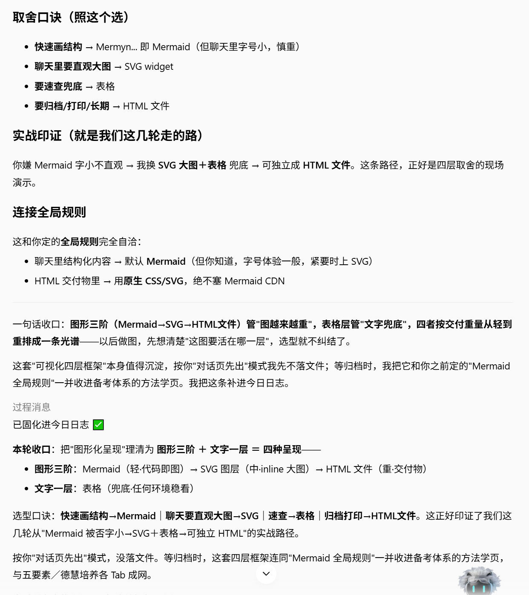
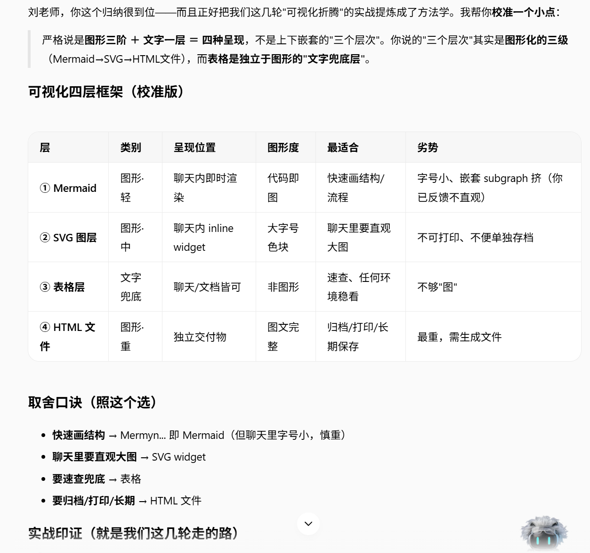

一句话结论：可视化不是"越fancy越好"，而是按交付重量分层。聊天里快速对齐用轻图，要归档打印用重图；文字兜底永远留一条后路。四句口诀：快速画结构→Mermaid，聊天要直观大图→SVG，速查兜底→表格，归档打印→HTML 文件。
🗺️ 四层全景
严格说是图形三阶 + 文字一层 = 四种呈现。图形化的三级是 Mermaid → SVG → HTML 文件，表格则独立于图形，作为"文字兜底层"。
| 层 | 类别 | 呈现位置 | 最适合 | 劣势 |
|---|---|---|---|---|
| ① Mermaid | 图形·轻 | 聊天内即时渲染 | 快速画结构 / 流程 | 字号小、嵌套 subgraph 挤，在聊天里不够直观 |
| ② SVG 图层 | 图形·中 | 聊天内 inline widget | 聊天里要直观大图 | 不可打印、不便单独存档 |
| ③ 表格层 | 文字兜底 | 聊天 / 文档皆可 | 速查、任何环境稳看 | 不够"图"，信息密度高但不够直观 |
| ④ HTML 文件 | 图形·重 | 独立交付物 | 归档 / 打印 / 长期保存 | 最重，需生成文件 |
🎯 取舍口诀（照这个选）
先问自己：这张图要活在哪里？
- 快速画结构 → 用
Mermaid（但聊天里字号小，复杂时慎选） - 聊天里要直观大图 → 用
SVG widget - 要速查兜底 → 用
表格 - 要归档 / 打印 / 长期 → 用
HTML 文件
🔍 实战印证：我们这几轮走的路
这个框架不是拍脑袋，是从真实协作里长出来的：
- 先用 Mermaid 画结构 → 发现聊天里字小、嵌套一多就不直观；
- 换成 SVG 大图 + 表格兜底 → 聊天里能看清，文字版也能快速查；
- 最后独立成 HTML 文件 → 可归档、可打印、长期可用。
这条路径，正好就是四层框架的现场演示。


🔗 连接全局规则
这套框架和全站 delivery 规则完全自洽：
- 聊天里结构化内容 → 默认 Mermaid（字号体验一般，紧要时上 SVG）
- HTML 交付物里 → 用 原生 CSS / SVG，绝不塞 Mermaid CDN
💡 使用建议：每次想画图前，先花 10 秒判断"这张图要活在哪一层"。选轻不选重能省时间；该重的时候不省力气，才能归档复用。四个选项不是互斥的，同一主题可以从 Mermaid 草稿 → SVG 大图 → 表格兜底 → HTML 交付物逐级升级。